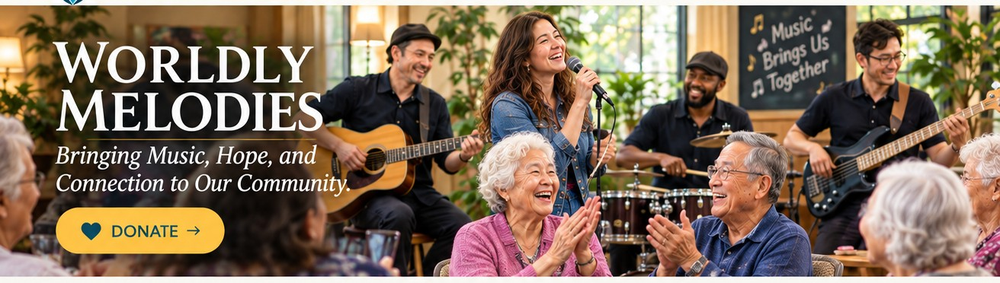
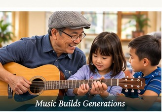
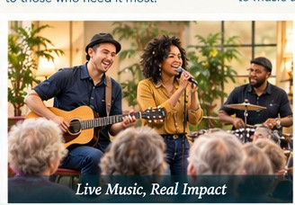
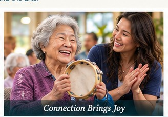
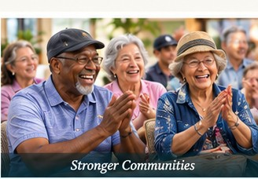

MUSIC • HOPE • CONNECTION
WORLDLY
MELODIES
Bringing Music, Hope, and Connection to Our Community.
♥ DONATE →WELCOME
Music belongs to everyone.
Worldly Melodies is a new nonprofit organization built around one simple idea: music can create joy, dignity, belonging, and connection at every stage of life.
OUR MISSION
Music has the power to heal, inspire, and bring people together.
We created Worldly Melodies as a nonprofit organization with one simple mission: to make music accessible to everyone, especially underserved communities, seniors, and individuals who may not otherwise have the opportunity to experience music or develop their talents.
Through music, we hope to create moments of joy, connection, hope, and belonging within our community.
Music for Everyone
Because music belongs to all.
Seniors & Elder-Care Communities
Bringing joy and connection to those who need it most.
Underserved Communities
Reaching people with limited access to music and the arts.
Develop Musical Talents
Creating opportunities to learn, grow, and shine.
Make a Difference
Your support can help bring music to more lives.
MUSIC & PERFORMANCES
Live music. Real connection.
We envision bringing diverse musicians and performers into community spaces where music can be shared, enjoyed, and experienced together.




OUR COMMUNITY
Every song can create a moment of connection.
We welcome people of different ages, backgrounds, cultures, and musical experiences. Our goal is to create inclusive spaces where people can listen, participate, learn, and share.
SUPPORT WORLDLY MELODIES
Together, we can make a difference.
Your support will help us bring music and meaningful connection to more people in our community.
♥ DONATE →CONTACT
We'd love to hear from you.
More contact information will be added here as Worldly Melodies grows.